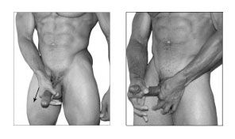
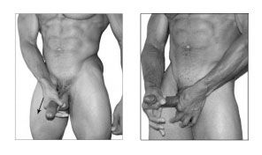
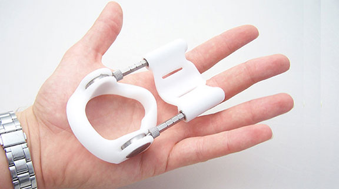

¡Es posible tener un pene más grande! Cómo aumenté mi "amiguete" 5 cm

¡HOLA A TODOS!
Me llamo Sergio y yo mismo he podido aumentar
mi pene de 10 a 15 cm sin cirugía.
Decidme una cosa: ¿15 cm no es suficiente y las chicas no os hacen ni caso? A mí me pasó lo mismo. Yo también conozco mujeres insaciables para las que ni siquiera 20 cm son suficientes, pero si comparo mi resultado con lo que me ha ''dado'' la naturaleza, la diferencia es enorme, ¡y estoy satisfecho al 100%!

Espero que mi experiencia os sea útil. Si yo he podido aumentarlo, ¡vosotros también podréis!
Un poco sobre mí
A los 15-16 años, yo, como todos los chicos, comparaba el tamaño de mi pene con el de mis amigos y compañeros de clase, los espiaba en secreto en el baño y en el vestuario (¿quién no hizo eso?). Y no sé por que, pero yo siempre acababa perdiendo. En ese momento, todos los chicos ya tenían en sus pantalones algo de lo que presumir delante de las chicas. Un amigo mío tenía un pene tan grande como el de un hombre, 20 cm como mínimo. Sin embargo, no quería ponerme triste y pensaba que mi ''pequeñajo'' sería grande cuando cumpliera 18 años.

En la universidad, las chicas empezaron a interesarse por mí. Siempre había sido un chico guapo, sociable y deportista, y podía pillar a cualquier bombón, pero la cosa no llegaba más allá de 1-2 noches. Básicamente, se iban en silencio después del sexo y no cogían el teléfono cuando las llamaba. Una incluso me dijo que tenía un pene tan pequeño como el de un bebé. Encima se lo dijo a sus amigas, casi dejo la universidad por la verguenza que pasé.
Mi pene no creció ni un centímetro incluso después de cumplir 25 años. Por eso, empecé a acomplejarme aún más con el paso de los años. Todo empeoró por el hecho de que soy muy alto (casi 2 metros) y musculoso. Cuando las chicas me conocían, esperaban que mi ''amiguete'' fuera tan grande como yo. ¿Qué podía ofrecerles? ¿Mis patéticos 10 cm?
Cuando comencé a trabajar y recibir unos ingresos estables, lo primero que hice fue recurrir a un terapeuta sexual con la esperanza de que me remitiera a una operación de aumento del pene, pero el médico dijo que no se debía tocar lo más preciado con un bisturí. Lo mejor era ir a un foro de PEers, unos hombres que practican el PE (Penis Enlargement o aumento del pene con métodos naturales). ¡Estos chicos sí que saben cómo convertir un pene diminuto en un pene de verdad en base a su experiencia!
¡Me metí en ese foro y me quedé alucinado! Mientras yo seguía ahí con mis complejos, otros chicos no se daban por vencidos y lograban el éxito... Resulta ser que hay muchas formas diferentes de aumentar pene, desde remedios caseros hasta tecnologías especiales.
En fin, tras 6 meses en ese fórum, me he convertido en un PEer experimentado y puedo compartir mi experiencia con otros.
Estos son los métodos que probé yo mismo.
Ejercicios para el aumento del pene
 
Tuve que pagar bastante dinero para tener acceso al conjunto de ejercicios. A cambio, recibí un conjunto de lecciones online con técnicas básicas, gracias a las cuales, según los autores, mi pene iba a crecer 5-8 cm de largo en seis meses.
Más tarde me enteré de que esos ejercicios se pueden encontrar en Internet de forma gratuita: buscad en google la técnica del jelqing con una toalla. Honestamente, estuve haciendo los ejercicios para el pene todos los días durante 3 meses, pero luego lo dejé debido a su ineficacia. Mi pene no creció ni una pizca, seguía midiendo 10 cm de longitud y 2,5 cm de grosor.
Pastillas
Las pastillas para el aumento del pene y la potencia sexual son populares entre los PEers. Yo probé solo dos marcas: una nacional y otra china. Ventajas: con estas pastillas quieres sexo más de lo habitual. ¡El pene hecha humo! Después de tomar las pastillas chinas, siempre estaba en un estado semiexcitado y, debido a esto, parecía más grande. Pero tan pronto como dejé de tomarlas, el pene volvió a su tamaño normal. Una vez más perdí mi tiempo y dinero para nada. Y esta es la principal desventaja de las pastillas.
Extensor
Siguiendo el consejo de los chicos del fórum, decidí comprar un extensor de pene como último recurso. En el sitio web del fabricante se decía que si usas este dispositivo constantemente (de 4 a 8 horas al día), ¡entonces tu "amiguete" aumentará 0,5 cm al mes! "¡Estaría bien alargarlo un par de centímetros!", pensé.
¡El extensor no es nada barato! Tuve que ahorrar algo de dinero con la esperanza de que mis gastos tuvieran al menos algún efecto.
Decidí usar el extensor todo el tiempo, durante al menos 6 meses, tanto en el trabajo como en casa. ¡No resultó ser fácil! O bien presiona demasiado, o bien te roza o aprieta la cabeza. De vez en cuando tenía que quitarlo, masajear la cabeza y volver a ponérmelo. Hacía todas esas manipulaciones en el baño de la oficina, y mis colegas comenzaron a sospechar algo. Sin embargo, yo soportaba valientemente todos los chistes y risas por un solo objetivo: llegar a aumentar mi pene algún día.
¡Usé el extensor durante seis meses y no obtuve ningún resultado! ¿Dónde diablos estaban los prometidos 0,5 cm al mes?
Cremas y geles
Hay muchos anuncios en Internet de cremas y geles para aumentar el pene. Un día, compré una crema de estas en un sex shop, pero resultó ser una estafa total. Después, los chicos del fórum me aconsejaron un nuevo producto llamado . Lo elogiaban incluso aquellos que estaban decepcionados con las cremas. Al principio dudé (¡ellos ya habían elogiado los extensores!), pero decidí probarlo.
El principio es simple: hay que aplicar el gel en el pene en un estado de excitación incompleta por la mañana y por la tarde. Lo ideal es combinarlo con masaje, pero yo era vago y lo hacía cada dos veces. Las instrucciones dicen que el gel está compuesto de extractos de hierbas que llenan el pene de sangre y aumentan los niveles de testosterona, produciendo el crecimiento.
¡El fabricante no había engañado! En una semana, mi pene aumentó 1 cm. Para algunos, no es mucho, ¡pero yo estaba realmente inspirado! ¡Al menos esta vez la publicidad no era engañosa!
Necesité 1 mes de para alcanzar el tamaño deseado. Al final del ciclo de tratamiento, mi pene se ''estiró'' hasta 15 cm. ¡Por fin me sentí como un hombre de verdad!

Justamente en ese momento, conocí a una chica increíble, encantadora, guapísima y con un cuerpo de infarto. La deseaba como un loco, pero no quería llevarla a la cama demasiado pronto. aumentó mi pene, pero los complejos en mi cabeza aún seguían ahí.
Una vez, mi novia y yo bebimos bastante y tuvimos una conversación franca. Ella me confesó que le encantan los penes grandes y me contó el pene que tenía su ex.
Era genial estar borracho en ese momento y no pensar en mis complejos. Al contrario, "encendí el modo hombre" y le dije que conmigo se lo pasaría mejor.
¡Mi novia era todo un torbellino en la cama! Se corría como una loca, una y otra vez, me arañó toda la espalda... En una sola noche le hice el amor hasta 4 veces.

A la mañana siguiente, pensé que había fingido los orgasmos porque seguro que su ex era mucho mejor que yo. Pero lo primero que escuché cuando ella se despertó fue:
Estaba claro que no mentía. Todavía estamos juntos, y ella no tiene ni idea de que mi "larga salchicha" (como le gusta llamar a mi pine) antes apenas alcanzaba los 10 cm.
¿Queréis aumentar el pene? ¡Podréis hacerlo!
He escrito este post para todos los que están experimentando los mismos problemas que yo hace tiempo. Al principio, lo publiqué en el foro de PEers, pero ahora lo hago público para todos. Incluso los PEers más experimentados no conocen , ni qué decir de los chicos normales.
Por lo tanto, ¡no repitáis mis errores! No perdáis el tiempo y dinero en métodos inútiles para el aumento del pene. Cuanto antes comencéis a actuar, más rápido os desharéis de los complejos y comenzaréis a vivir como hombres normales.


Vi este post en el foro. Este chico lleva ya mucho tiempo ahí. Es un tío de palabra, podéis confiar en él. Por cierto, se lo aconsejé yo.
¿Alguien más lo ha probado? ¿Os ha ayudado?
Llevo 7 meses practicando el jelqing, el mío me ha crecido 2 cm
Las cremas son una mierda. No entiendo por qué el extensor no le fue bien al chico.
¡Vaaaya, veo que todos los PEers experimentados están aquí! ¿Cómo os va con los extensores? ¿No os aprietan? Yo dejé de usarlos después de usar hace seis meses. ¡Aumenté la polla 4 cm y estoy contento!
Mi novio se aplicaba este gel: ¡el resultado es excelente!
Es la primera vez que oigo que el pene se pueda aumentar. Siempre había pensado que no se podía hacer nada en contra de la naturaleza.
Los extensores no funcionan, estoy de acuerdo. Y este gel realmente funciona. ¡Llevo 2 semanas usándolo y mi ''amiguete'' está creciendo!
¿La gente no tiene nada que hacer o qué? Al parecer, el pene del autor es lo más importante de su vida.
Es fácil juzgar a uno cuando tú lo tienes grande, pero si el pene es realmente pequeño, ¿qué pasa, eh? ¿Qué hay que estar toda tu vida así? ¡Hay gente que también quiere follar!
¡Un tema interesante! Yo me he pedido un tubo para probar, ¡gracias!